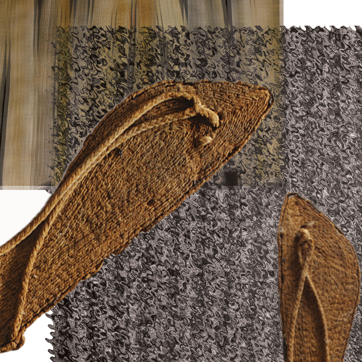

ANCIENT SOLES: TREND OR CULT?
Issue 87 - Fall 2024
The footwear world has been thrown into chaos as the controversial "Pharaoh Flops" phenomenon spreads across social media. What started as a niche revival of ancient Egyptian sandal designs has morphed into something far more divisive, with dramatic public burnings of modern flip-flops becoming increasingly common.

"I've returned to the true path of footwear," claims Simera Robertson, 34, who organized a "liberation ceremony" where participants tossed their rubber flip-flops into a communal fire pit. "These modern abominations disconnect us from the earth. The ancients understood proper foot support."
The movement centers around handcrafted papyrus and leather sandals based on 4,000-year-old designs found in tomb paintings. Adherents call themselves "Sole Seekers" and often gather at dawn for what they term "grounding rituals" where they walk barefoot before donning their Egyptian-inspired footwear. Mainstream footwear brands are scrambling to respond. Industry analyst Marcus Webb notes, "What began as an aesthetic choice has developed almost religious overtones for some enthusiasts. The ceremonial destruction of competing products is concerning from both safety and market perspectives."

Is this just another fashion trend or something deeper? As one convert told us, "Once you walk like an Egyptian, there's no going back to modern mediocrity."